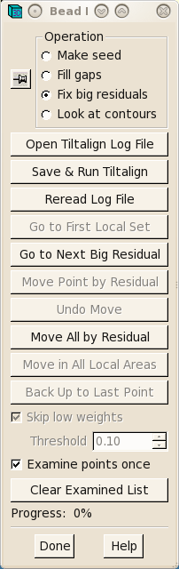
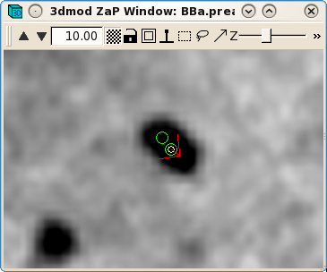
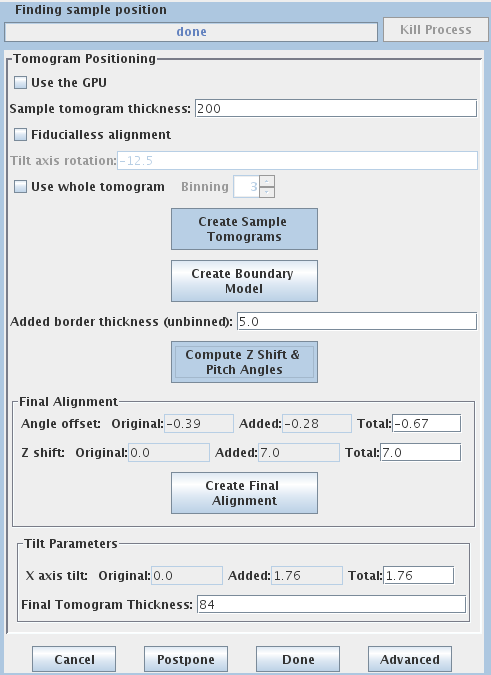
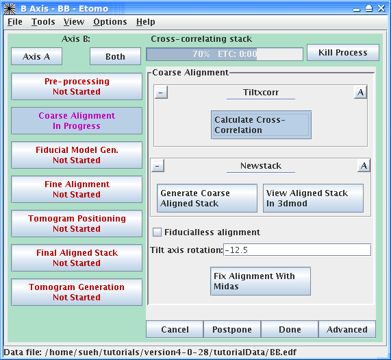

I. Initial
set up and viewing the raw tilt series:
This tutorial contains a small, dual-axis sample data set and a
step-by-step guide to eTomo. The tutorial is not meant to be a
replacement for the Tomography Guide. Please refer to the more
comprehensive Tomography Guide for
additional detail about each step. The sample data set was chosen
because you should get through the entire process with no problems! The
Tomography Guide is a good reference for trouble shooting and learning
more about the many programs that are used for computing dual-axis
tomograms.
To get started,
tar -xzf tutorialData.tar.gz
or, on an SGI, you will probably need two steps:
gunzip tutorialData.tar.gz
tar -xf tutorialData.tar
This will create a directory, tutorialData, containing
the two raw stacks needed to start the tutorial, named BBa.st and
BBb.st, respectively. There is also a subdirectory, finalFiles,
containing all of the small working files left after completing the
data set, as well a copy of the final reconstruction.
The file names reflect a convention that you will have to follow with
your own data sets: the raw stacks have the extension .st and dual axis
stacks have a common name then end in a.st and b.st.
It is useful to look at the raw tilt series files
in order to make decisions about preprocessing steps or to see if there
are any particular views that have poor
image quality, and that you want to exclude from the
To determine if you have views that have poor image quality (poor focus, etc.), read in the raw stack(s) by typing:
3dmod BBa.st
Movie through the raw tilt series images by
clicking the middle mouse button. Notice how the images jump around
slightly. Make note of any particular views that you want to exclude
from the alignment and reconstruction. In this sample data set, there
are no images that need to be excluded.
If images were collected on the microscope using a CCD camera, random x-rays hitting the CCD camera during collection of dark reference or individual images can cause extreme high or low pixel values in your data file. As a result, these extreme values ruin the contrast and can cause artifacts in the reconstruction. The example in this tutorial does not have extreme pixel values. However, a quick way to determine if your file does have extreme pixel values is to look at the Minimum and Maximum Density values in image header of the raw stack. To do this type:
header BBa.st
If the minimum density value is a negative number or 0, then you probably have an extreme black pixel in your data set, caused by an x-ray event during collection of the dark reference. If you have a high maximum density, then you have an extreme white pixel in your data set. If an extreme value is lurking somewhere in the data set and a preprocessing step is needed to remove them, please refer to the Pre-Processing: Removing X-Rays section of the Tomography Guide.
II.
To start eTomo, type:
etomo
When eTomo is first started, a Setup panel
will come up (shown above). At this point you can either set up
processing of a new data set or open an existing data set under the File
menu.
To start working on a new data set, the following fields must be filled
out. The Dataset Name is the name of the file containing the
raw, tilt series (or the root name if a dual axis data set was
collected). You can enter the Dataset Name by clicking
on the yellow file selection associated with the Dataset Name
field, or type in the directory path and file name directly in the
field. The Backup Directory is an optional field to save small
working files every time you run a procedure. This field can be left
empty if you don't wish to use a backup directory.
Select whether the data set is Single Axis or Dual Axis.
The Frame Type should be Single
frame. The Montage
option is available for processing montaged tilt
series.
The next fields specify Pixel size (nm), the size of gold fiducials
(nm) and Image rotation (degrees). Pixel size (in
nm) is dependent on the microscope, camera, and magnification. The
Image rotation (tilt axis angle from vertical, in degrees)
will
also vary based on the microscope and magnification. Pressing the Scan
Header button will retrieve the Pixel size and Image
rotation values if these are specified in the MRC file
header. For this tutorial example, press Scan Header to define
the
pixel size for this data set (2.02) and Image rotation (-12.5). You
must
specify the size of the gold Fiducial marker diameter (10 nm).
If the Parallel Processing checkbox is enabled, uncheck it.
Parallel processing, which is not covered in this tutorial, allows some
processes to be distributed across multiple computers. Leave the
Specify the source of the tilt angles for either
one or both axes, as appropriate. In this example, tilt angles are
stored in the extended header and so the default "
Details specific for the tutorial sample data set are shown above. For
this sample data set, the Dataset name
is BBa.st, it is a dual axis set. The pixel size is 2.02 nm, the
fiducial diameter is 10 nm and the image rotation is -12.5 degrees.
Tilt angles for this data set are stored and extracted from the data
file.
Press the Create Com Scripts
button to move on to generating the tomograms.
III. eTomo Main Window
The Main Window consists of several areas: on the
left is a column of buttons (Process Control Buttons) that allow you to
select a particular stage of tomogram computation to work on. On the
top is a Process Monitor that informs you of the status of the
current process or the last process completed.

The Process Control Buttons are arranged in the suggested order of
processing from top to bottom. The buttons are color coded to
signify the stage of the process, where red indicates that the
process has not been started, magenta indicates that the process is
currently in progress, and green indicates that the process has been
completed. When one of the buttons is selected, the right side of the
window will fill in with information and fields associated with a
specific process. These forms are referred to as Process Panels.
They allow you to modify the necessary parameters and execute
specific programs required by that processing step. The
parameters
and buttons on each Process Panel are typically laid out from top to
bottom in the order they should be executed, much like a flow chart.
When you execute a process (by pressing a button on one of the
Process Panels) the Process Monitor will indicate what the process is
doing and when it is complete.
IV. Pre-Processing
If images were collected on the microscope using a CCD
camera, random x-rays hitting the CCD camera during collection of
images
or even in the initial dark reference can cause extreme high or low
pixel values in your data file. As a result, these extreme values ruin
the contrast and can cause artifacts in the reconstruction.
V. Coarse alignment.
Press the Coarse Alignment Process Control Button on Axis A to proceed with creating a coarse-aligned stack.

Pressing the Calculate Cross-Correlation
button runs the program, Tiltxcorr. The program uses cross-correlation
to find an initial translational alignment between successive
images of a tilt series (i.e. just shifts in x and y). The output
file, BBa.prexf, contains a list of transforms (or recommended shifts)
that will be applied to the image data in the next step.
Pressing the Generate Coarse Aligned Stack button will run 2
programs. Xftoxg takes the transforms
created by Tiltxcorr to obtain a single consistent, or ‘global’ set of
alignments. These new transforms are then applied to the image data
using the program Newstack. The output file created is
BBa.preali. One can view the prealigned stack by pressing the View
Aligned Stack in 3dmod button. Large image shifts can be edited
manually using the the interactive program, Midas. This is not an issue
with this data set; see the
VI. Creating a
fiducial model based on the position of gold particles.

Press the 'Seed Fiducial Model'
button.
This will open BBa.preali in 3dmod and create an empty model file named BBa.seed.
Go to section 31 by pressing the Insert key on your keyboard (this will go directly to the middle section, which is often the 0° tilt).
In the Zap (image) window, place a model point in the center of 20-40 gold particles by centering the cursor in the middle of the gold particle and pressing the middle mouse button. With each new gold bead selected, hit the ‘n’ key on the keyboard. This creates a new contour for each new gold bead. It’s useful to adjust the contrast of the image and to increase the magnification of the image using the ‘+’ key to make sure the model point is positioned in the center of the gold bead. In my example (BBa.seed) I selected 24 gold particles; the model contains 1 object, 24 contours, with each contour having 1 point. Save this ‘seed’ model by going to File -> Save model, or by hitting the hot key 's'. The model is referred to as a ‘seed’ because it contains model points on only one section. The next step uses this model as a seed from which a complete fiducial model is built.
Press the 'Track Fiducial Seed Model' process
button.
This will run the Beadtrack program to find the gold on all other sections. The output file created by tracka.com is BBa.fid, which is the completed fiducial model. This computer-generated model is not perfect, and so the next procedure involves an iterative process to edit this fiducial model.
Press the 'Fix Fiducial Model' process button.
This procedure will open the prealigned stack (BBa.preali) and the
fiducial model file (BBa.fid) in 3dmod.


A dialog box called Bead Fixer will come up. Bead Fixer facilitates
editing the fiducial
model.
Hit ‘Go to Next Gap’ by clicking on the button using the left
mouse button, or by using the spacebar as a hot key. This will
attach to a point (highlighted with a yellow circle) that has a missing
model point on an adjacent section. Use the Page Up or Page Down key to
find the section with the missing point and use the middle mouse button
to add the point in the center of the gold particle. It is useful to
increase the magnification of the image with the ‘+’ key and adjust the
contrast on the sections, especially at high tilt. Repeat ‘Go
to Next Gap’ until the message, ‘
VII. Alignment
of serial tilts
The Fine Alignment panel is
organized with a set of three tabs to solve for various alignment
parameters. A general alignment is first done by pressing the Compute
alignment button at the bottom of the Fine Alignment box.
This command file runs the program, Tiltalign, to solve for the
displacements, rotations, tilts and magnification differences in the
tilted views. The program uses the position of the gold particles in
the fiducial model and a variable metric minimization approach to find
the best fit. It creates a log file that gives a synopsis of what was
done. To access this log file, right click the mouse cursor over
the window region associated with the process. This will open a menu
that is split into three sections: the first section will allow you to
open the log files associated with the current process, the second
section will allow you to open up the man pages associated with the
current processes, and the final menu section opens the general help
guides. Select "Align axis:a log file" to open the log file.
The Errors tab contains a mean
residual error and standard deviation and the ratio of measured values
to total unknowns.
In my example, the first Compute
Alignment run gave a Residual error mean of 0.351
The goal of the fine alignment step is to reduce
the Residual error mean to 0.2- 0.5.
The Tiltalign program also creates two model files that provide useful
information about the fiducial model. The
first (BBa.3dmod) displays a 3-D model of
the fiducials
You should see a nice distribution of pink and green spheres across the
field of view. Rotate the model to view edge-on by holding down the
number 8 key on the keypad. You will see the separation of the two
surfaces with this view. Avoid using models that have a cluster of
fiducials in any one particular region because this will skew the
alignment. Close the 3dmodv window.
The second model Tiltalign produces is a residual vector model.
Press the 'View Residual Vectors' button at the bottom of
the Fine Alignment box. This will open the prealigned stack in
3dmod and display the residual vector model on each section.
The model will show the current model point as a red X, and the
position of the residual as a green X. This residual displacement is
expanded by a factor of 10 in order to distinguish it from the actual
model point, because displacements are often very small (< 2
pixels). In large (>2k x 2k) images the residual model will often
show large displacements in one area but not in other areas. In these
cases, the residual model helps to make decisions if local alignments
are needed. In this example, local alignments are not needed. It is
common to have larger residuals at the higher extreme tilts. Leave
3dmod open for the next several steps and press the
The following iterative steps involve fixing fiducial points with large residuals.
Select ‘Open Tiltalign Log File’ in the Bead Fixer
dialog
box. Select the aligna.log file.

Click ‘Go to Next Big Residual’ in
the Bead Fixer dialog box.
The model point that had the big residual will
have a red arrow pointing in the direction of the recommended move.
You’ll probably be able to see that the model point is not centered
properly on the gold. If you
click ‘Move Point by Residual’ in the Bead Fixer dialog
box,
it will move the model point by the recommended amount. This works
most of the time, but if the recommendation looks wrong, you can move
it
by hand by centering the cursor over the middle of the gold bead and
then clicking the right mouse button.


Repeat selecting ‘Go to Next Big Residual’
and ‘Move Point by Residual’ until no residuals are found. The
hot key ' will cycle to the next residual and the hot key ;
will move point by residual. Save the model file and leave the file
open.
Access the aligna.log file and go to the Surface Angles tab.
Note the Total tilt angle change at the bottom (in
my example,
this value was -0.29). Put this value in the
If your data set has gold on both surfaces, you can solve for distortion. Press the 'Global Variables' tab in the Fine Alignment box:
Select the '
Return to the 3dmod windows and select Reread
Log File in the
Bead Fixer dialog window. Repeat fixing the new residuals that
Tiltalign
came up with after solving for distortion. This time press the

VIII. Sampling the data set to create 3 small reconstructions
The goal of the next step is to shift and rotate
your reconstruction so that it is as flat as possible and will fit into
the smallest volume. This is done by sampling three regions of the
tomogram, ones computed from near the top, middle, and bottom of the
tilt images. (When these samples are not adequate, you can do this
instead with a whole, binned down tomogram; see
Increase the Sample tomogram thickness to 200. This will create a
reconstruction that is much thicker than the original section.
Press Create Sample Tomograms

This command file first extracts and aligns a 60 pixel sliver from the top, middle, and bottom of the image stack. The program then uses these samples to create 10 slices of the reconstruction from the top, middle, and bottom of the aligned stack. These output files are named topa.rec, mida.rec, bota.rec.
Press Create Boundary Models
This step involves creating a model to
define the top, middle, and bottom surfaces of each
reconstruction. When the 'Create
Boundary Models' button is pressed, 3dmod will read in all three
reconstructions at once, with the topa.rec displayed first and viewed
edge on. 3dmod will also start with an empty model, named
tomopitcha.mod.

The top bar of the Zap window has a feature ‘4th D’ and a
backward and forward arrow. If you click the forward arrow, you can
cycle through to the mida.rec and bota.rec reconstructions,
respectively. Start with the topa.rec. Use the contrast sliders to
adjust contrast. Notice the material in the center of the volume
with a mottled appearance. This is the part of the reconstruction with
biological material. Using the middle mouse button, place one
model point at the left side of the top surface that defines the region
containing the biological material, and a second model point at the
right side of the top surface. A line will connect the two points. Hit
‘n’ for a new contour and model the bottom surface of the section with
2 points on the left and right sides, respectively. Toggle to the
mid.rec and bot.rec file by hitting the arrow button to the right of ‘4th
D’ at the top of the zap window. Repeat modeling the top and bottom
surfaces of the other two reconstructions, hitting ‘n’ for a new
contour for each surface. The final model should have 1 object and 6
contours, and each contour should have 2 model points. Save this
model file.
Press 'Compute Z Shift and Pitch Angles'
Based on these model contours,
tomopitch determines parameters to make the reconstruction as flat as
possible and to fit in the smallest volume as possible. This command
file creates an output file ‘tomopitcha.log’. This log
file will automatically open after the program is finished.

IX. The final runs to create the full-size tomogram
An example of the tomopitcha.log from my example is shown
below:

The bottom of the log file contains information
calculated from all three positions. Enter the offsets to the fields
directly below the Compute Z Shift
and Pitch Angles button. In my example, the "add -0.2 to total
angle offset" in the log file (above) gives the information for the

Press 'Create Full Aligned Stack'
This
command will apply the alignment transforms to the full-sized image for
the final, aligned stack. The output file is named BBa.ali

The full aligned stack may be
viewed by pressing View Full Aligned
Stack, although this is not necessary. There is an
optional step for filtering the aligned stack, which is also not needed
here. The default filtering parameters in the
Refer back to the
tomopitcha.log file (see above). Edit
Press 'Generate Tomogram'
When the tomogram is computed, examine it by
pressing View Tomogram in 3dmod.
You may also choose to Delete Aligned
Image Stacks at this point to save space.
Movie through the reconstruction by hitting the middle mouse button to
step through serial, tomographic slices from the top surface of the
tomogram to the bottom surface. Press the
IX. On to the second axis (Axis B)
To see Axis B, press the
Again, the Pre-processing step is not
required
for this sample data set. Go to the Coarse Alignment steps, as
described above for Axis A.


After the coarse-aligned stack has been
generated, press Done to
advance
to the next step.
In order to combine both tilt axes at least some (8-10) of the beads that you track must be the same in the two series. To accomplish this, use the program Transferfid.
Press 'Transfer Fiducials From Other Axis'
Pressing the
The transferfid log file will list the fiducial correspondence between the first and second axes. In this example, all 24 fiducials correspond:
Points in A:
1-24
Points
in B: 1-24
The output file of transferfid
is the seed model for the second axis. In this example, the model is
named BBb.seed. Proceed to Track
Fiducial Seed Model in the Axis B window.

This will automatically track the fiducials for the ‘B’ set. Fix the gaps in the BBb.fid file by pressing the Fix Fiducial Model Using Bead Fixer as outlined above for the A axis. When all gaps are found, press Done to proceed to the Fine Alignment and Tomogram calculation steps.
You will now proceed with the same steps following the same procedure as outlined above for the Axis A set. Briefly:
Press 'Compute Alignment' for General and Global variable tabs in the Fine Alignment box.
At this point, you will start the iterative
alignment procedure as you did for the ‘A’ set by editing model
points with large residuals, saving the model, and computing the
alignment. When the alignment is complete, press
Proceed with 'Tomogram Positioning' as outlined above for the A Axis.
Proceed with 'Tomogram Generation' steps as outlined above for the A Axis.
XI. Combining the two axes

Go back to Axis A by
pressing the Axis A button.
To combine the two tomograms press the Tomogram
Combination process button.

Tomogram Combination Panel
The Tomogram
Combination Panel is organized with 3 tabs:
The Setup window is where
information is given about the particular data set. The first section
describes the Tomogram Matching
Relationship. It is most common to match the B tomogram to A.
The Initial Volume Alignment Method
field asks for information on the fiducial marker distribution. In this
example, fiducials are on both sides. The corresponding fiducial list
in A and B is from the transferfid.log file. In this example, all
fiducials (1-24) correspond.
The next section contains information for
Sometimes, this will not eliminate “extraneous”
material to allow the two axes to combine. In that case, you have to
make a patch region model. To make a patch region model, check the
box "Use patch region model file" and press the
When the parameters for the Setup
panel have been entered, press Create
Combine Scripts to create a series of command files that
will run various programs in the combine procedure. Etomo will
pop up a warning message, "WARNING: Only one layer of patches will be
computed in Z". This is not a problem for this dataset.
Press OK to remove the
message. Press Start Combine
to begin the process
of dual-axis tomogram combination. eTomo will automatically
advance to the Initial Match and
finally the Final Match tabs
as
various programs are being run.
After tomogram combination is complete, press
XII. Post-Processing
Post-processing involves a volume trimming and byte scaling step, followed by deletion of intermediate files. There is also an option to create a squeezed down volume, which is useful when working with very large data sets, particularly when reconstructing serial sections.

The final reconstruction of the two axes combined into one will always be called sum.rec. Open the sum.rec reconstruction by pressing 3dmod Full Volume. Step through the reconstruction and determine the X,Y and Z ranges for the final volume. A convenient way to set the X and Y range is to turn on the rubberband with the dashed rectangle in the toolbar of the Zap window, press the left mouse button over the upper left corner of the desired area, and drag the mouse to the lower right corner. When you press Get XY Volume Range from 3dmod, eTomo will retrieve the X and Y values of the rubberband from 3dmod. In this example, the default ranges for X and Y are used. The Z axis (in the flipped tomogram) range has been set from a Z min of 20 to a Z max of 68 to exclude non-cellular material. Finally a scaling range is set to find the range of slices that exclude the gold beads. In this example, the scaling is section based and has a range between slices 34 and 64. Press the Trim Volume button to run Trimvol. Trimvol is a single tool for trimming a volume and converting it to bytes. Finally, view the final, trimmed volume (named BB.rec) by pressing 3dmod Trimmed Volume. Press
XIII. Clean-up of intermediate files